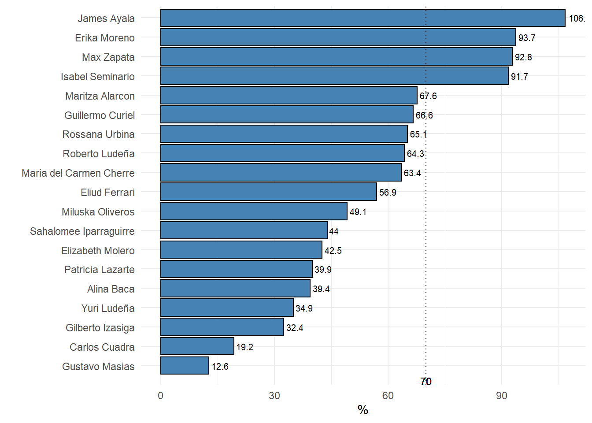

Informes generados por el área de análisis comercial.
| Zona | Nombre | Total | Premium | Lanzamiento | Ocuvial | Normal | Masivo |
|---|---|---|---|---|---|---|---|
| RR MM Lima Azul | |||||||
| CALLAO | Maria del Carmen Cherre | 60.4 | 62.1 | NA | 84.2 | 69.6 | 46.3 |
| ESTE | Gilberto Izasiga | 23.7 | 31.3 | NA | 19.9 | 12.2 | 26.3 |
| NORTE | Isabel Seminario | 88.1 | 17.1 | NA | 51.3 | 16.5 | 119.1 |
| OESTE | Guillermo Curiel | 54.2 | 63.0 | NA | 49.5 | 49.2 | 34.2 |
| SUR | Rossana Urbina | 45.1 | 44.2 | NA | 12.3 | 96.1 | 41.5 |
| RR MM Lima Rojo | |||||||
| CALLAO | Erika Moreno | 86.4 | 167.0 | 41.5 | 19.9 | 81.4 | 46.3 |
| ESTE | Miluska Oliveros | 39.6 | 15.4 | 136.1 | 15.1 | 122.5 | 26.3 |
| NORTE | Max Zapata | 90.4 | 33.8 | 71.8 | 3.4 | 35.5 | 119.1 |
| OESTE | Maritza Alarcon | 48.9 | 42.8 | 11.7 | 48.2 | 79.3 | 34.2 |
| SUR | Eliud Ferrari | 44.6 | 60.8 | 61.6 | 45.2 | 28.2 | 41.5 |
| RR MM Provincias | |||||||
| NORTE GRANDE A | Gustavo Masias | 11.9 | 7.4 | 15.9 | 7.3 | 12.6 | 15.8 |
| NORTE GRANDE B | Yuri Ludeña | 33.4 | 34.1 | 21.3 | 25.0 | 36.5 | 34.6 |
| NORTE MEDIO | Carlos Cuadra | 17.6 | 48.7 | 86.7 | 15.3 | 31.0 | 9.5 |
| SUR GRANDE | Roberto Jimenez | 61.0 | 69.5 | 27.4 | 27.9 | 114.2 | 47.9 |
| SUR ORIENTE | Patricia Lazarte | 24.6 | 30.9 | 9.1 | 8.4 | 31.3 | 23.0 |
| VENDEDORES Lima | |||||||
| NORTE | James Ayala | 103.6 | 27.9 | 7.1 | 27.5 | 14.5 | 298.4 |
| CALLAO | Alina Baca | 38.4 | 37.4 | 16.7 | 49.5 | 35.8 | 44.9 |
| SUR | Sahalomee Iparraguirre | 31.5 | 42.6 | 13.5 | 7.7 | 25.5 | 41.3 |
| ESTE | Elizabeth Molero | 28.8 | 7.3 | 14.3 | 8.1 | 82.1 | 14.1 |
| 1 Fecha de actualización fuentes: | |||||||
| 2 LANSIER: 2021-11-16 | |||||||
| 3 METRONIC: 2021-11-15 | |||||||
| 4 DIFARLIB: 2021-11-15 | |||||||
| 5 CASTILLO: 2021-11-15 | |||||||
| 6 M&M: 2021-11-15 | |||||||
| 7 DIMEXA: 2021-11-15 | |||||||
| 8 Los valores estan en porcentajes | |||||||

Y asi se pueden ir agregando mas tablas graficos y conclusiones que se generan automatico y se cargan a esta web creada para Lansier, a la izquierda irian apareciendo los nuevos titulos que se asignen conforme se vayan creando, asi podrian hallar mas rapidamente lo que estan buscando, esto podria ser un reemplazo del pdf, me comentó que podia ser una opción para que los jefes no tengan que estar abriendo pdfs cada que les envio, asi que ahi esta la idea y tal vez se puede modificar algo o volver al pdf, lo bueno de esta web es que siempre esta online, solo se necesita el link, es similar a como funciona un dashboard de power bi, el unico esfuerzo es ejecutra el programa para que actualice la data jalando del sql y cree el reporte con todo actualizado al igual que hacemos en el power bi.